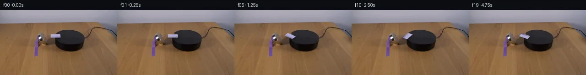

![首帧]()

Round 00
2026-11-05T05:03:09.246754+00:00像素候选变化代码 +224/−0inspection 更新
pixels ff47a3ad6a55cde1 · code 7e6415e54a134977
查看本轮 generate.py 真实 diff
--- previous/generate.py
+++ current/generate.py
@@ -0,0 +1,224 @@
+#!/usr/bin/env python3
+"""Generate the 20-frame PixelWorld continuation from local RGB pixels only."""
+
+from __future__ import annotations
+
+import hashlib
+import math
+from pathlib import Path
+
+import cv2
+import numpy as np
+from PIL import Image, ImageDraw
+
+import artifact_io
+
+
+ROOT = Path(__file__).resolve().parent
+WIDTH, HEIGHT = 256, 144
+N_FRAMES = 20
+
+# The four observed corners of the domino's visible top/bevel in frame 00.
+SOURCE_CORNERS = np.float32(
+ [[110.0, 53.0], [132.0, 53.0], [133.0, 61.2], [109.3, 61.2]]
+)
+
+# A larger canonical texture makes the repeated projective resampling gentle.
+TEX_W, TEX_H = 96, 36
+TEXTURE_CORNERS = np.float32(
+ [[0.0, 0.0], [TEX_W - 1.0, 0.0],
+ [TEX_W - 1.0, TEX_H - 1.0], [0.0, TEX_H - 1.0]]
+)
+
+# A planar rotation is projected into the table/platform plane. Vertical
+# distances are compressed by the oblique camera angle.
+CENTER = np.float32([121.2, 57.25])
+HALF_LENGTH = 11.55
+HALF_WIDTH = 6.95
+PLANE_Y_SCALE = 0.59
+
+
+def load_source() -> np.ndarray:
+ image = np.asarray(Image.open(ROOT / "first_frame.png").convert("RGB"))
+ if image.shape != (HEIGHT, WIDTH, 3) or image.dtype != np.uint8:
+ raise ValueError(f"Unexpected source array: {image.shape}, {image.dtype}")
+ return image
+
+
+def make_texture(source: np.ndarray) -> tuple[np.ndarray, np.ndarray]:
+ """Rectify the observed domino into a softly edged canonical texture."""
+ matrix = cv2.getPerspectiveTransform(SOURCE_CORNERS, TEXTURE_CORNERS)
+ texture = cv2.warpPerspective(
+ source,
+ matrix,
+ (TEX_W, TEX_H),
+ flags=cv2.INTER_CUBIC,
+ borderMode=cv2.BORDER_REFLECT_101,
+ ).astype(np.float32)
+
+ # About 0.6 source pixels of antialiasing on every edge.
+ yy, xx = np.mgrid[0:TEX_H, 0:TEX_W].astype(np.float32)
+ edge_distance = np.minimum.reduce(
+ [xx, yy, (TEX_W - 1) - xx, (TEX_H - 1) - yy]
+ )
+ alpha = np.clip((edge_distance + 0.35) / 2.6, 0.0, 1.0)
+ return texture, alpha.astype(np.float32)
+
+
+def make_clean_plate(source: np.ndarray) -> np.ndarray:
+ """Reconstruct only the tiny area hidden by the frame-00 domino."""
+ mask = np.zeros((HEIGHT, WIDTH), dtype=np.uint8)
+ polygon = np.round(SOURCE_CORNERS).astype(np.int32)
+ cv2.fillConvexPoly(mask, polygon, 255, lineType=cv2.LINE_AA)
+ mask = cv2.dilate(mask, np.ones((3, 3), np.uint8), iterations=1)
+
+ # TELEA follows the diagonal table/platform boundary from untouched pixels
+ # immediately around this compact mask. No other scene pixels are altered.
+ clean = cv2.inpaint(source, mask, 2.4, cv2.INPAINT_TELEA)
+ return clean
+
+
+def rotation_angle(frame_index: int) -> float:
+ """Clockwise radians: cosine ease to 210 degrees, then a one-frame hold."""
+ u = min(frame_index / 18.0, 1.0)
+ eased = 0.5 - 0.5 * math.cos(math.pi * u)
+ return math.radians(210.0 * eased)
+
+
… diff truncated; 137 more lines …